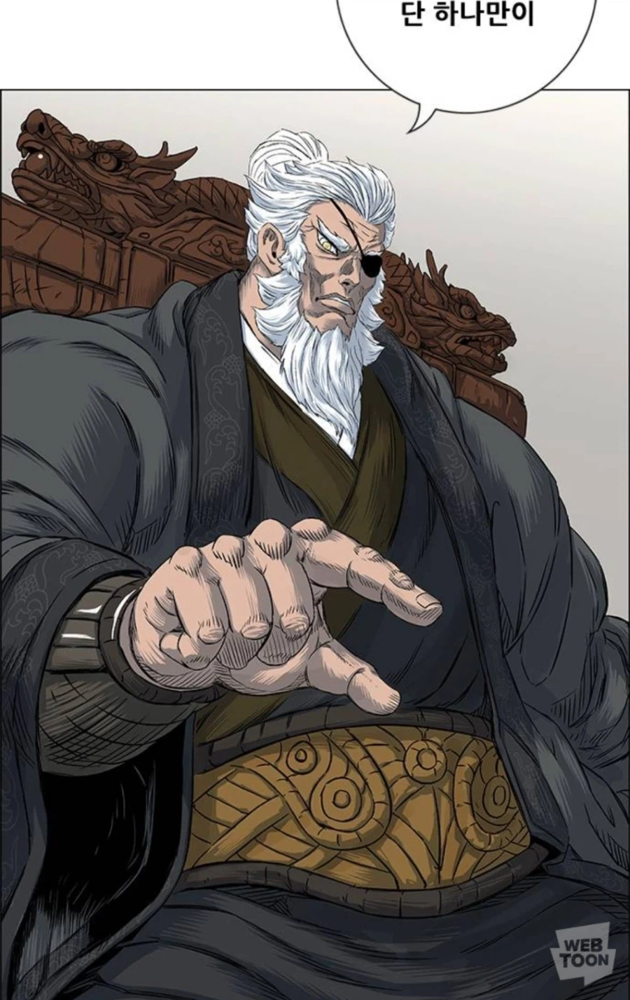
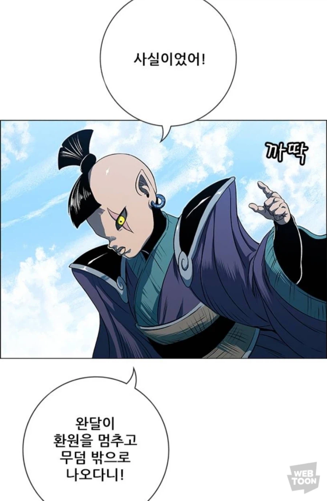
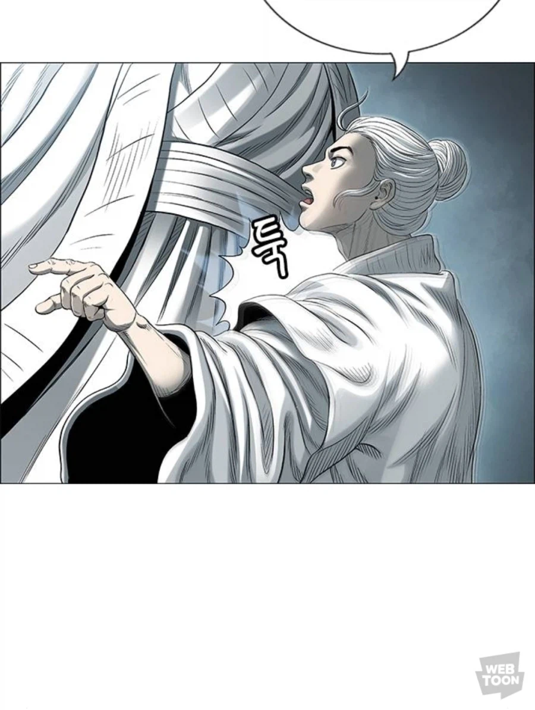

여자 어시가 6명이나 되니 돼지가 하나 껴있어도 이상할건 없음
상규형 나이 좀 있어서 아마 저게 뭔지도 모를테고
최신화에서는 그래도 안보이네



여자 어시가 6명이나 되니 돼지가 하나 껴있어도 이상할건 없음
상규형 나이 좀 있어서 아마 저게 뭔지도 모를테고
최신화에서는 그래도 안보이네
가르킬때 엄지가 왜 떠있냐?
그런데 가르킬때는 손바닥이 좋다
가르키다 x
가리키다 o
손가락으로 가리키는거 엄지를 주먹처럼 쥐고 있으면 되는데 굳이 저렇게 그리면 난 그냥 99%는 페미로 보임